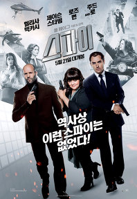

악의연대기
나쁘지 않았음. 볼때는 몰입도 좋았다
이야기 어떻게 풀어갈지 궁금하기도 하고 :)
스토리 마지막 반전은 반전을 위한 반전같음. 안 넣어도 무방할듯 ^^;;
영화관 가서 꼭 보세요!! 보다는 나중에 DVD나 집에서 봐도
그닥 후회는 없을 듯 합니당.
용서는없다
옛날에 혼자 봤었는데 엄마님이랑 집에서 쿡TV(?)로 다시봤다
보고싶은 영화를 골라볼수 있다니 오오 신세계 +_+ (←;;)
이건 정말 다시봐도 ㅜㅜ

스파이
심야로 엄마님과 영화관 가서 봄
아 보는 내내 계속 켈켈거리고 웃었다 ㅋㅋㅋㅋ
안봤음 후회할뻔 ^^
잼나요~여러분 보세요~~
신의한수
이것도 밤에 혼자 쿡TV로 :)
지루하지 않고 잼나게 봤어용
그리고 넘 잔인해 ㅠㅠ
영화관 자주 가고싶은데 메르스땜에 무섭다 ㅜㅜ